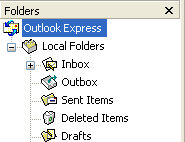
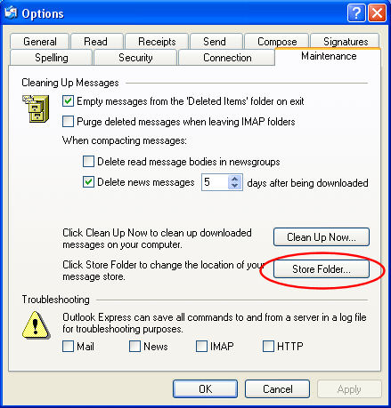
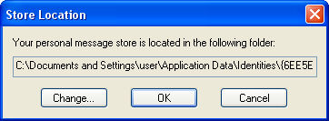
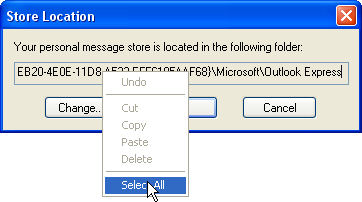
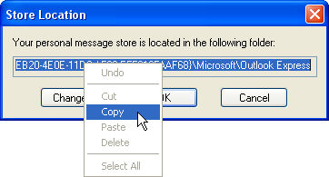

Free
computer Tutorials
|
Free
computer Tutorials
|
|
 home home |
Stay at Home and Learn | ||||
How to Backup Emails in Outlook Express
Backing up emails in Outlook Express is not for the faint hearted! It's a lengthy process. If Microsoft decide to update this free email client, a "Backup" button would be a welcome addition. However, the software giant shows no sign of doing anything with Outlook Express, and haven't changed the look and feel of it for some years. (They do security updates, though.)
First, create a folder on your hard drive. Call it something like "backupOE". This folder is where we're going to be saving copies of all of Outlook Express's email folders. Once you have created a new folder, we can begin. (If you don't know how to create a new folder on your hard drive, the tutorial is here: how to create a new folder.)
Outlook Express email foldersOutlook Express keeps all of your emails in folders. When you send
an email, Outlook Express keeps a copy of it in the Sent Items
folder. Likewise, there is a separate folder for emails in your Inbox.
You can see all of Outlook Express's folder by clicking on the View
menu. Select Layout from the menu. From the dialogue box, make
sure there is a tick next to Folder List. On the left hand
side of Outlook Express, you should see something like this:  These are the folders that we will backup, ensuring that we have a copy of all our emails.
Where Outlook Express saves your email foldersAll of these folders are stored on your hard drive, in a special location. Because that location may differ from user to user, we can find out where the email folders are stored. So do the following:
 Click the Store Folder button, and you'll see another box pop up. This one:  This is the location on your hard drive of your emails and email folders. We need to copy this location.

 Clicking on Copy will copy this location to the Windows Clipboard. It will then be available to other programmes. Now that we've copied the location to the Clipboard, we can come out of Outlook Express. So,
In the second half of this tutorial, you'll learn how to open up the emails folders, copy them, and paste to your new backup folder. Continue with the tutorial -->
|
|||||
|